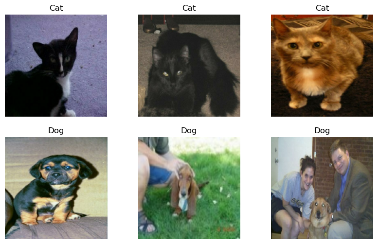
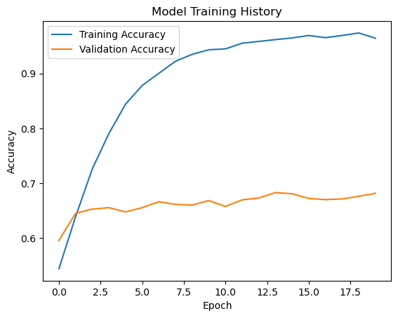
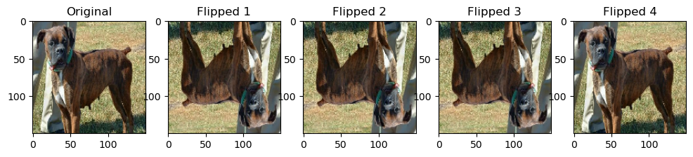
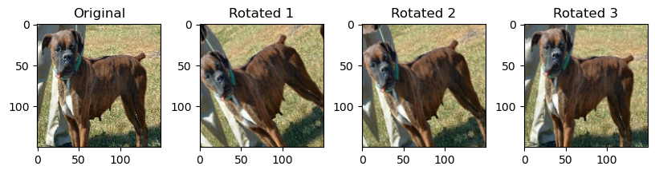
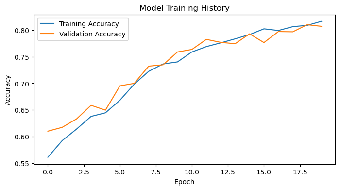
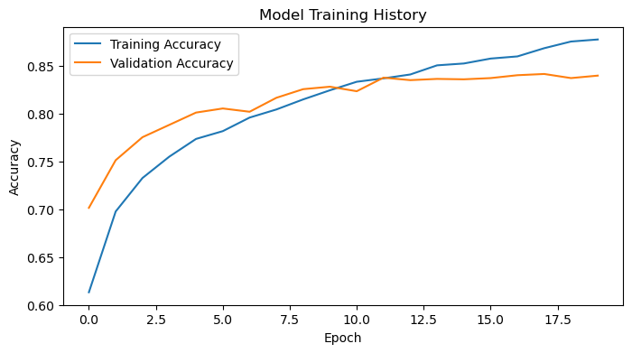
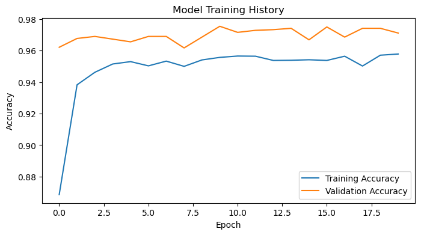

# loading packages
import os
import keras
from keras import utils
import tensorflow as tf
import tensorflow_datasets as tfds
from tensorflow.keras.models import Sequential
from tensorflow.keras.layers import Conv2D, MaxPooling2D, Flatten, Dense, Dropout
from tensorflow.keras import layers, models
from tensorflow.keras.applications import MobileNetV3Large
from tensorflow.keras.applications.mobilenet_v3 import preprocess_input
import matplotlib.pyplot as plt
import numpy as npIn this post, we’ll teach a machine learning algorithm to distinguish between pictures of dogs and pictures of cats.
1. Load Packages and Obtain Data
After loading the necessary packages, we load a sample data set from Kaggle that contains labeled images of cats and dogs.
train_ds, validation_ds, test_ds = tfds.load(
"cats_vs_dogs",
# 40% for training, 10% for validation, and 10% for test (the rest unused)
split=["train[:40%]", "train[40%:50%]", "train[50%:60%]"],
as_supervised=True, # Include labels
)
print(f"Number of training samples: {train_ds.cardinality()}")
print(f"Number of validation samples: {validation_ds.cardinality()}")
print(f"Number of test samples: {test_ds.cardinality()}")Number of training samples: 9305
Number of validation samples: 2326
Number of test samples: 2326By running the code chunk above, we’ve created Datasets for training, validation, and testing. Then, run the following code chunk to resize the images to a fixed size of 150x150.
resize_fn = keras.layers.Resizing(150, 150)
train_ds = train_ds.map(lambda x, y: (resize_fn(x), y))
validation_ds = validation_ds.map(lambda x, y: (resize_fn(x), y))
test_ds = test_ds.map(lambda x, y: (resize_fn(x), y))Then, run the following code chunk for rapidly reading data. The batch_size determines how many data points are gathered from the directory at once.
from tensorflow import data as tf_data
batch_size = 64
train_ds = train_ds.batch(batch_size).prefetch(tf_data.AUTOTUNE).cache()
validation_ds = validation_ds.batch(batch_size).prefetch(tf_data.AUTOTUNE).cache()
test_ds = test_ds.batch(batch_size).prefetch(tf_data.AUTOTUNE).cache()We can get a piece of the data set using the take method; e.g. train_ds.take(1) will receive one batch (32 images with labels) from the training data.
To briefly explore our data set, we’ll write a function to create a two-row visualization. The first row will show three random pictures of cats. The second row will show three random pictures of dogs.
def visualize_cats_and_dogs(train_ds):
plt.figure(figsize=(10, 6))
# unbatch the dataset first
train_ds = train_ds.unbatch()
# shuffle the dataset to randomize the images
train_ds = train_ds.shuffle(buffer_size=9305) # set buffer size to size of training samples
# filter out cats and dogs
cat_ds = train_ds.filter(lambda image, label: tf.equal(label, 0)).take(3)
dog_ds = train_ds.filter(lambda image, label: tf.equal(label, 1)).take(3)
# initialize the plot for cats
for i, (image, label) in enumerate(cat_ds):
ax = plt.subplot(2, 3, i + 1)
plt.imshow(image.numpy().astype('uint8'))
plt.title('Cat')
plt.axis('off')
# initialize the plot for dogs
for j, (image, label) in enumerate(dog_ds):
ax = plt.subplot(2, 3, j + 4) # indexing starts from 4 to move to the second row
plt.imshow(image.numpy().astype('uint8'))
plt.title('Dog')
plt.axis('off')
plt.show()
visualize_cats_and_dogs(train_ds)
The following line of code will create an iterator called labels_iterator.
labels_iterator= train_ds.unbatch().map(lambda image, label: label).as_numpy_iterator()Using this iterator, we’ll compute the number of images in the training data with label 0 (corresponding to "cat") and label 1 (corrresponding to "dog"). The baseline machine learning model is the model taht always guesses the most frequent label.
# Collect all labels into a list
labels = list(labels_iterator)
# Count occurrences of each label
num_cats = labels.count(0)
num_dogs = labels.count(1)
# Calculate total number of labels
total_labels = len(labels)
# Discuss the baseline model's potential accuracy
most_frequent_label_count = max(num_cats, num_dogs)
baseline_accuracy = most_frequent_label_count / total_labels
print(f"Number of cats: {num_cats}")
print(f"Number of dogs: {num_dogs}")
print(f"Total labels: {total_labels}")
print(f"Baseline model accuracy: {baseline_accuracy:.2%}")
# This baseline accuracy will be our benchmark.Number of cats: 4637
Number of dogs: 4668
Total labels: 9305
Baseline model accuracy: 50.17%In this case, the baseline model would be 50.17% accurate. We will treat this as the benchmark for improvement. In order for our models to be considered good data science achievements, it should do much better than the baseline!
2. First Model: keras.Sequential
We’ll first create a keras.Sequential model using two Conv2D layers, two MaxPooling2D layers, one Flatten layer, one Dense layer, and one Dropout layer.
# define the model
model1 = Sequential([
Conv2D(16, (3, 3), activation='relu', input_shape=(150, 150, 3)),
MaxPooling2D(2, 2),
Conv2D(32, (3, 3), activation='relu'),
MaxPooling2D(2, 2),
Flatten(),
Dense(128, activation='relu'),
Dropout(0.5),
Dense(1, activation='sigmoid') # Use sigmoid for binary classification
])
# compile the model
model1.compile(optimizer='adam',
loss='binary_crossentropy',
metrics=['accuracy'])
# train the model
history = model1.fit(train_ds,
epochs =20,
validation_data=validation_ds)
# plot training history
import matplotlib.pyplot as plt
plt.plot(history.history['accuracy'], label='Training Accuracy')
plt.plot(history.history['val_accuracy'], label='Validation Accuracy')
plt.title('Model Training History')
plt.ylabel('Accuracy')
plt.xlabel('Epoch')
plt.legend()
plt.show()Epoch 1/20
146/146 ━━━━━━━━━━━━━━━━━━━━ 33s 222ms/step - accuracy: 0.5188 - loss: 46.7301 - val_accuracy: 0.5959 - val_loss: 0.6664
Epoch 2/20
146/146 ━━━━━━━━━━━━━━━━━━━━ 33s 226ms/step - accuracy: 0.6349 - loss: 0.6478 - val_accuracy: 0.6453 - val_loss: 0.6400
Epoch 3/20
146/146 ━━━━━━━━━━━━━━━━━━━━ 32s 221ms/step - accuracy: 0.7118 - loss: 0.5712 - val_accuracy: 0.6531 - val_loss: 0.6607
Epoch 4/20
146/146 ━━━━━━━━━━━━━━━━━━━━ 33s 228ms/step - accuracy: 0.7776 - loss: 0.4807 - val_accuracy: 0.6556 - val_loss: 0.6590
Epoch 5/20
146/146 ━━━━━━━━━━━━━━━━━━━━ 32s 221ms/step - accuracy: 0.8337 - loss: 0.3855 - val_accuracy: 0.6479 - val_loss: 0.6939
Epoch 6/20
146/146 ━━━━━━━━━━━━━━━━━━━━ 33s 225ms/step - accuracy: 0.8735 - loss: 0.3135 - val_accuracy: 0.6556 - val_loss: 0.7973
Epoch 7/20
146/146 ━━━━━━━━━━━━━━━━━━━━ 40s 272ms/step - accuracy: 0.8954 - loss: 0.2622 - val_accuracy: 0.6664 - val_loss: 0.8296
Epoch 8/20
146/146 ━━━━━━━━━━━━━━━━━━━━ 36s 243ms/step - accuracy: 0.9218 - loss: 0.1982 - val_accuracy: 0.6617 - val_loss: 0.9163
Epoch 9/20
146/146 ━━━━━━━━━━━━━━━━━━━━ 32s 222ms/step - accuracy: 0.9344 - loss: 0.1742 - val_accuracy: 0.6604 - val_loss: 0.9611
Epoch 10/20
146/146 ━━━━━━━━━━━━━━━━━━━━ 32s 220ms/step - accuracy: 0.9432 - loss: 0.1514 - val_accuracy: 0.6685 - val_loss: 1.0226
Epoch 11/20
146/146 ━━━━━━━━━━━━━━━━━━━━ 33s 229ms/step - accuracy: 0.9480 - loss: 0.1370 - val_accuracy: 0.6578 - val_loss: 1.1663
Epoch 12/20
146/146 ━━━━━━━━━━━━━━━━━━━━ 33s 224ms/step - accuracy: 0.9533 - loss: 0.1234 - val_accuracy: 0.6698 - val_loss: 1.3386
Epoch 13/20
146/146 ━━━━━━━━━━━━━━━━━━━━ 34s 234ms/step - accuracy: 0.9580 - loss: 0.1144 - val_accuracy: 0.6733 - val_loss: 1.3887
Epoch 14/20
146/146 ━━━━━━━━━━━━━━━━━━━━ 34s 232ms/step - accuracy: 0.9622 - loss: 0.0997 - val_accuracy: 0.6831 - val_loss: 1.0608
Epoch 15/20
146/146 ━━━━━━━━━━━━━━━━━━━━ 35s 236ms/step - accuracy: 0.9676 - loss: 0.0949 - val_accuracy: 0.6810 - val_loss: 1.1369
Epoch 16/20
146/146 ━━━━━━━━━━━━━━━━━━━━ 33s 225ms/step - accuracy: 0.9721 - loss: 0.0740 - val_accuracy: 0.6724 - val_loss: 1.2527
Epoch 17/20
146/146 ━━━━━━━━━━━━━━━━━━━━ 33s 226ms/step - accuracy: 0.9657 - loss: 0.0854 - val_accuracy: 0.6702 - val_loss: 1.0557
Epoch 18/20
146/146 ━━━━━━━━━━━━━━━━━━━━ 33s 225ms/step - accuracy: 0.9699 - loss: 0.0844 - val_accuracy: 0.6715 - val_loss: 1.2079
Epoch 19/20
146/146 ━━━━━━━━━━━━━━━━━━━━ 33s 226ms/step - accuracy: 0.9723 - loss: 0.0780 - val_accuracy: 0.6763 - val_loss: 1.2703
Epoch 20/20
146/146 ━━━━━━━━━━━━━━━━━━━━ 33s 227ms/step - accuracy: 0.9664 - loss: 0.0920 - val_accuracy: 0.6819 - val_loss: 1.1441
I tried modifying the first and second Conv2D layer to have 16 and 32 filters, respectively. In additon, I set the Dense layer to have 64 units. However, that resulted in the model’s validation accuracy being %49.48 for the first 10 epoches. Moreover, the loss value ended up stablizing to 0.6933 without any improvements beyond epoch 4. So I stopped the training at epoch 12.
Then, I modified the Dense layer to have 128 units. This resulted in a much better accuracy as the first epoch resulted in a validation accuracy of 59.59%. The accuracy of model 1 stabilized between 65% to 70% during training. This is roughly a 15% improvement in accuracy compared to the baseline. I do see some overfitting in model1 because the training accuracy quickly outgrows the validdation accuracy. In addition, the training accuracy in the end is close to 96%, which is very high.
3. Second Model: Using Data Augmentation
For our second model, we’ll add some data augmentation layers to my model. Data augmentation refers to the practice of including modified copies of the same image in the training set. For example, a picture of a cat is still a picture of a cat even if we flip it upside down or rotate it 90 degrees. We can include such transformed versions of the image in our training process in order to help our model learn so-called invariant features of our input images.
We’ll randonly flip an image horizontally and vertically and plot the results!
for images, labels in train_ds.take(1):
image = images[0] # Take the first image in the batch
# Create the RandomFlip layer
random_flip = tf.keras.layers.RandomFlip("horizontal_and_vertical")
# Display the original and flipped images
plt.figure(figsize=(12, 3)) # for better display
plt.subplot(1, 5, 1) # for uniform spacing
plt.imshow(image.numpy().astype('uint8')) # Convert tensor to uint8 for display
plt.title("Original")
for i in range(2, 6): # Iterate to display multiple flipped images
# Apply the RandomFlip layer and plot
flipped_image = random_flip(image[None, ...], training=True)
plt.subplot(1, 5, i)
plt.imshow(tf.cast(flipped_image[0], tf.int32)) # Cast to int32 for proper image display
plt.title(f"Flipped {i-1}")
plt.show()
Next, we’ll try randomly rotating the image by ±10% of 360° (i.e., ±36°) and plot the results!
# create the RandomRotation layer
random_rotation = tf.keras.layers.RandomRotation(0.1) # rotate within ±10% of 360° (i.e., ±36°)
image = tf.cast(image, tf.float32) / 255.0 # scale the image to [0, 1]
# display the original and rotated images
plt.figure(figsize=(10, 2))
plt.subplot(1, 4, 1)
plt.imshow(image)
plt.title("Original")
for i in range(2, 5):
# apply the RandomRotation layer and plot
rotated_image = random_rotation(image[None, ...], training=True)
plt.subplot(1, 4, i)
plt.imshow(rotated_image[0]) # directly use the image tensor
plt.title(f"Rotated {i-1}")
plt.show()
We’ll apply a keras.layers.RandomFlip() layer and a keras.layers.RandomRotation() layer to a keras.models.Sequential!
model2 = Sequential([
tf.keras.layers.RandomFlip("horizontal"),
tf.keras.layers.RandomRotation(0.1),
Conv2D(16, (3, 3), activation='relu', input_shape=(150, 150, 3)),
MaxPooling2D(2, 2),
Conv2D(32, (3, 3), activation='relu'),
MaxPooling2D(2, 2),
Conv2D(64, (3, 3), activation='relu'),
MaxPooling2D(2, 2),
Flatten(),
Dense(256, activation='relu'),
Dropout(0.3),
Dense(1, activation='sigmoid')
])
model2.compile(optimizer='adam',
loss='binary_crossentropy',
metrics=['accuracy'])
history = model2.fit(train_ds, epochs=20, validation_data=validation_ds)
# Plotting the training and validation accuracy
plt.figure(figsize=(8, 4))
plt.plot(history.history['accuracy'], label='Training Accuracy')
plt.plot(history.history['val_accuracy'], label='Validation Accuracy')
plt.title('Model Training History')
plt.ylabel('Accuracy')
plt.xlabel('Epoch')
plt.legend()
plt.show()Epoch 1/20
146/146 ━━━━━━━━━━━━━━━━━━━━ 41s 270ms/step - accuracy: 0.5478 - loss: 21.1476 - val_accuracy: 0.6101 - val_loss: 0.6665
Epoch 2/20
146/146 ━━━━━━━━━━━━━━━━━━━━ 44s 298ms/step - accuracy: 0.5982 - loss: 0.6710 - val_accuracy: 0.6174 - val_loss: 0.6523
Epoch 3/20
146/146 ━━━━━━━━━━━━━━━━━━━━ 42s 288ms/step - accuracy: 0.6212 - loss: 0.6508 - val_accuracy: 0.6333 - val_loss: 0.6389
Epoch 4/20
146/146 ━━━━━━━━━━━━━━━━━━━━ 42s 287ms/step - accuracy: 0.6419 - loss: 0.6337 - val_accuracy: 0.6586 - val_loss: 0.6139
Epoch 5/20
146/146 ━━━━━━━━━━━━━━━━━━━━ 43s 292ms/step - accuracy: 0.6474 - loss: 0.6240 - val_accuracy: 0.6496 - val_loss: 0.6162
Epoch 6/20
146/146 ━━━━━━━━━━━━━━━━━━━━ 45s 305ms/step - accuracy: 0.6703 - loss: 0.6174 - val_accuracy: 0.6952 - val_loss: 0.5850
Epoch 7/20
146/146 ━━━━━━━━━━━━━━━━━━━━ 43s 295ms/step - accuracy: 0.6975 - loss: 0.5753 - val_accuracy: 0.6999 - val_loss: 0.5680
Epoch 8/20
146/146 ━━━━━━━━━━━━━━━━━━━━ 41s 282ms/step - accuracy: 0.7242 - loss: 0.5528 - val_accuracy: 0.7322 - val_loss: 0.5320
Epoch 9/20
146/146 ━━━━━━━━━━━━━━━━━━━━ 43s 292ms/step - accuracy: 0.7294 - loss: 0.5378 - val_accuracy: 0.7347 - val_loss: 0.5189
Epoch 10/20
146/146 ━━━━━━━━━━━━━━━━━━━━ 41s 280ms/step - accuracy: 0.7332 - loss: 0.5270 - val_accuracy: 0.7588 - val_loss: 0.5037
Epoch 11/20
146/146 ━━━━━━━━━━━━━━━━━━━━ 43s 296ms/step - accuracy: 0.7522 - loss: 0.5093 - val_accuracy: 0.7635 - val_loss: 0.4988
Epoch 12/20
146/146 ━━━━━━━━━━━━━━━━━━━━ 41s 279ms/step - accuracy: 0.7667 - loss: 0.4877 - val_accuracy: 0.7825 - val_loss: 0.4753
Epoch 13/20
146/146 ━━━━━━━━━━━━━━━━━━━━ 43s 295ms/step - accuracy: 0.7760 - loss: 0.4671 - val_accuracy: 0.7769 - val_loss: 0.4765
Epoch 14/20
146/146 ━━━━━━━━━━━━━━━━━━━━ 44s 299ms/step - accuracy: 0.7799 - loss: 0.4687 - val_accuracy: 0.7743 - val_loss: 0.4791
Epoch 15/20
146/146 ━━━━━━━━━━━━━━━━━━━━ 44s 305ms/step - accuracy: 0.7909 - loss: 0.4552 - val_accuracy: 0.7928 - val_loss: 0.4518
Epoch 16/20
146/146 ━━━━━━━━━━━━━━━━━━━━ 42s 286ms/step - accuracy: 0.7978 - loss: 0.4415 - val_accuracy: 0.7764 - val_loss: 0.4776
Epoch 17/20
146/146 ━━━━━━━━━━━━━━━━━━━━ 42s 285ms/step - accuracy: 0.7890 - loss: 0.4426 - val_accuracy: 0.7971 - val_loss: 0.4654
Epoch 18/20
146/146 ━━━━━━━━━━━━━━━━━━━━ 42s 286ms/step - accuracy: 0.7980 - loss: 0.4459 - val_accuracy: 0.7966 - val_loss: 0.4740
Epoch 19/20
146/146 ━━━━━━━━━━━━━━━━━━━━ 41s 281ms/step - accuracy: 0.8098 - loss: 0.4202 - val_accuracy: 0.8100 - val_loss: 0.4328
Epoch 20/20
146/146 ━━━━━━━━━━━━━━━━━━━━ 42s 289ms/step - accuracy: 0.8142 - loss: 0.4116 - val_accuracy: 0.8070 - val_loss: 0.4507
The accuracy of model 2 stabilized between 75% to 81% during training. This is roughly a 10% improvement in accuracy compared to model1. I don’t see overfitting in model2 because the training accuracy and validation accuracy closely follow each other in the plot above, and the final training accuracy is roughly 80%, which is reasonable.
4. Third Model: Using Data Preprocessing
It can sometimes be helpul to make simple transformations to the input data so that we can improve our model’s validation accuracy.
For example, in this case, the original data has pixels with RGB values between 0 and 255, but many models will train faster with RGB values normalized between 0 and 1, or possibly between -1 and 1. These are mathematically identical situations, since we can always just scale the weights. But if we handle the scaling prior to the training process, we can spend more of our training energy handling actual signal in the data and less energy having the weights adjust to the data scale.
The following code chunk will create a preprocessing layer called preprocessor, which we can add to our model pipeline.
i = keras.Input(shape=(150, 150, 3))
# The pixel values have the range of (0, 255), but many models will work better if rescaled to (-1, 1.)
# outputs: `(inputs * scale) + offset`
scale_layer = keras.layers.Rescaling(scale=1 / 127.5, offset=-1)
x = scale_layer(i)
preprocessor = keras.Model(inputs = i, outputs = x)model3 = Sequential([
preprocessor,
tf.keras.layers.RandomFlip("horizontal"),
tf.keras.layers.RandomRotation(0.1),
Conv2D(16, (3, 3), activation='relu', input_shape=(150, 150, 3)),
MaxPooling2D(2, 2),
Conv2D(32, (3, 3), activation='relu'),
MaxPooling2D(2, 2),
Conv2D(64, (3, 3), activation='relu'),
MaxPooling2D(2, 2),
Flatten(),
Dense(256, activation='relu'),
Dropout(0.3),
Dense(1, activation='sigmoid')
])
model3.compile(optimizer='adam',
loss='binary_crossentropy',
metrics=['accuracy'])
# Train the model
history = model3.fit(train_ds, epochs=20, validation_data=validation_ds)
plt.figure(figsize=(8, 4))
plt.plot(history.history['accuracy'], label='Training Accuracy')
plt.plot(history.history['val_accuracy'], label='Validation Accuracy')
plt.title('Model Training History')
plt.ylabel('Accuracy')
plt.xlabel('Epoch')
plt.legend()
plt.show()Epoch 1/20
146/146 ━━━━━━━━━━━━━━━━━━━━ 45s 296ms/step - accuracy: 0.5760 - loss: 0.7294 - val_accuracy: 0.7016 - val_loss: 0.5778
Epoch 2/20
146/146 ━━━━━━━━━━━━━━━━━━━━ 44s 299ms/step - accuracy: 0.6809 - loss: 0.5910 - val_accuracy: 0.7515 - val_loss: 0.5141
Epoch 3/20
146/146 ━━━━━━━━━━━━━━━━━━━━ 48s 326ms/step - accuracy: 0.7254 - loss: 0.5434 - val_accuracy: 0.7756 - val_loss: 0.4755
Epoch 4/20
146/146 ━━━━━━━━━━━━━━━━━━━━ 53s 361ms/step - accuracy: 0.7497 - loss: 0.5120 - val_accuracy: 0.7885 - val_loss: 0.4517
Epoch 5/20
146/146 ━━━━━━━━━━━━━━━━━━━━ 47s 320ms/step - accuracy: 0.7773 - loss: 0.4793 - val_accuracy: 0.8014 - val_loss: 0.4302
Epoch 6/20
146/146 ━━━━━━━━━━━━━━━━━━━━ 42s 286ms/step - accuracy: 0.7807 - loss: 0.4666 - val_accuracy: 0.8057 - val_loss: 0.4278
Epoch 7/20
146/146 ━━━━━━━━━━━━━━━━━━━━ 43s 293ms/step - accuracy: 0.7970 - loss: 0.4407 - val_accuracy: 0.8022 - val_loss: 0.4405
Epoch 8/20
146/146 ━━━━━━━━━━━━━━━━━━━━ 41s 282ms/step - accuracy: 0.8004 - loss: 0.4331 - val_accuracy: 0.8169 - val_loss: 0.4101
Epoch 9/20
146/146 ━━━━━━━━━━━━━━━━━━━━ 40s 277ms/step - accuracy: 0.8173 - loss: 0.4116 - val_accuracy: 0.8259 - val_loss: 0.3985
Epoch 10/20
146/146 ━━━━━━━━━━━━━━━━━━━━ 44s 300ms/step - accuracy: 0.8266 - loss: 0.3931 - val_accuracy: 0.8285 - val_loss: 0.3932
Epoch 11/20
146/146 ━━━━━━━━━━━━━━━━━━━━ 46s 312ms/step - accuracy: 0.8282 - loss: 0.3845 - val_accuracy: 0.8237 - val_loss: 0.3980
Epoch 12/20
146/146 ━━━━━━━━━━━━━━━━━━━━ 48s 332ms/step - accuracy: 0.8344 - loss: 0.3786 - val_accuracy: 0.8379 - val_loss: 0.3832
Epoch 13/20
146/146 ━━━━━━━━━━━━━━━━━━━━ 48s 327ms/step - accuracy: 0.8417 - loss: 0.3546 - val_accuracy: 0.8353 - val_loss: 0.3912
Epoch 14/20
146/146 ━━━━━━━━━━━━━━━━━━━━ 45s 308ms/step - accuracy: 0.8555 - loss: 0.3381 - val_accuracy: 0.8366 - val_loss: 0.3827
Epoch 15/20
146/146 ━━━━━━━━━━━━━━━━━━━━ 43s 292ms/step - accuracy: 0.8476 - loss: 0.3444 - val_accuracy: 0.8362 - val_loss: 0.3617
Epoch 16/20
146/146 ━━━━━━━━━━━━━━━━━━━━ 42s 287ms/step - accuracy: 0.8574 - loss: 0.3262 - val_accuracy: 0.8375 - val_loss: 0.3729
Epoch 17/20
146/146 ━━━━━━━━━━━━━━━━━━━━ 44s 301ms/step - accuracy: 0.8569 - loss: 0.3256 - val_accuracy: 0.8405 - val_loss: 0.3806
Epoch 18/20
146/146 ━━━━━━━━━━━━━━━━━━━━ 41s 280ms/step - accuracy: 0.8699 - loss: 0.3071 - val_accuracy: 0.8418 - val_loss: 0.3676
Epoch 19/20
146/146 ━━━━━━━━━━━━━━━━━━━━ 42s 284ms/step - accuracy: 0.8809 - loss: 0.2964 - val_accuracy: 0.8375 - val_loss: 0.3875
Epoch 20/20
146/146 ━━━━━━━━━━━━━━━━━━━━ 45s 310ms/step - accuracy: 0.8791 - loss: 0.2853 - val_accuracy: 0.8401 - val_loss: 0.3871
The accuracy of model 3 stabilized between 80% to 85% during training. This is roughly a 15% improvement in accuracy compared to model1. I don’t see overfitting in model3, because even though the training accuracy is higher than the valifation accuracy, the gap between the two values in the plot appear to be small. In addition, the final training accuracy is roughly 87%, which is reasonable.
5. Fourth Model: Using Transfer Learning
Let’s use model3 as a base model, incorporate into a full model, and then train that model as our fourth model.
IMG_SHAPE = (150, 150, 3)
base_model = keras.applications.MobileNetV3Large(input_shape=IMG_SHAPE,
include_top=False,
weights='imagenet')
base_model.trainable = False
i = keras.Input(shape=IMG_SHAPE)
x = base_model(i, training = False)
base_model_layer = keras.Model(inputs = i, outputs = x)model4 = keras.Sequential([
# data augmentation layers from model3
keras.layers.RandomFlip("horizontal"),
keras.layers.RandomRotation(0.1),
base_model,
keras.layers.GlobalMaxPooling2D(),
keras.layers.Dropout(0.2),
keras.layers.Dense(2, activation='softmax')
])
model4.compile(optimizer='adam',
loss='sparse_categorical_crossentropy',
metrics=['accuracy'])
# Train the model
history = model4.fit(train_ds, epochs=20, validation_data=validation_ds)
# Plot training history
plt.figure(figsize=(8, 4))
plt.plot(history.history['accuracy'], label='Training Accuracy')
plt.plot(history.history['val_accuracy'], label='Validation Accuracy')
plt.title('Model Training History')
plt.ylabel('Accuracy')
plt.xlabel('Epoch')
plt.legend()
plt.show()Epoch 1/20
146/146 ━━━━━━━━━━━━━━━━━━━━ 50s 319ms/step - accuracy: 0.7765 - loss: 2.4293 - val_accuracy: 0.9622 - val_loss: 0.2711
Epoch 2/20
146/146 ━━━━━━━━━━━━━━━━━━━━ 46s 316ms/step - accuracy: 0.9331 - loss: 0.5682 - val_accuracy: 0.9678 - val_loss: 0.2334
Epoch 3/20
146/146 ━━━━━━━━━━━━━━━━━━━━ 41s 280ms/step - accuracy: 0.9451 - loss: 0.4454 - val_accuracy: 0.9690 - val_loss: 0.2053
Epoch 4/20
146/146 ━━━━━━━━━━━━━━━━━━━━ 44s 304ms/step - accuracy: 0.9533 - loss: 0.3284 - val_accuracy: 0.9673 - val_loss: 0.2196
Epoch 5/20
146/146 ━━━━━━━━━━━━━━━━━━━━ 43s 292ms/step - accuracy: 0.9557 - loss: 0.3387 - val_accuracy: 0.9656 - val_loss: 0.2315
Epoch 6/20
146/146 ━━━━━━━━━━━━━━━━━━━━ 42s 286ms/step - accuracy: 0.9503 - loss: 0.3845 - val_accuracy: 0.9690 - val_loss: 0.1929
Epoch 7/20
146/146 ━━━━━━━━━━━━━━━━━━━━ 42s 291ms/step - accuracy: 0.9541 - loss: 0.2786 - val_accuracy: 0.9690 - val_loss: 0.1901
Epoch 8/20
146/146 ━━━━━━━━━━━━━━━━━━━━ 43s 293ms/step - accuracy: 0.9492 - loss: 0.2987 - val_accuracy: 0.9617 - val_loss: 0.2298
Epoch 9/20
146/146 ━━━━━━━━━━━━━━━━━━━━ 42s 285ms/step - accuracy: 0.9493 - loss: 0.2922 - val_accuracy: 0.9686 - val_loss: 0.1842
Epoch 10/20
146/146 ━━━━━━━━━━━━━━━━━━━━ 41s 283ms/step - accuracy: 0.9570 - loss: 0.2350 - val_accuracy: 0.9755 - val_loss: 0.1329
Epoch 11/20
146/146 ━━━━━━━━━━━━━━━━━━━━ 44s 302ms/step - accuracy: 0.9593 - loss: 0.2209 - val_accuracy: 0.9716 - val_loss: 0.1661
Epoch 12/20
146/146 ━━━━━━━━━━━━━━━━━━━━ 44s 300ms/step - accuracy: 0.9576 - loss: 0.2291 - val_accuracy: 0.9729 - val_loss: 0.1467
Epoch 13/20
146/146 ━━━━━━━━━━━━━━━━━━━━ 49s 338ms/step - accuracy: 0.9562 - loss: 0.2177 - val_accuracy: 0.9733 - val_loss: 0.1378
Epoch 14/20
146/146 ━━━━━━━━━━━━━━━━━━━━ 46s 312ms/step - accuracy: 0.9487 - loss: 0.2762 - val_accuracy: 0.9742 - val_loss: 0.1366
Epoch 15/20
146/146 ━━━━━━━━━━━━━━━━━━━━ 48s 332ms/step - accuracy: 0.9516 - loss: 0.2467 - val_accuracy: 0.9669 - val_loss: 0.1626
Epoch 16/20
146/146 ━━━━━━━━━━━━━━━━━━━━ 47s 321ms/step - accuracy: 0.9551 - loss: 0.2051 - val_accuracy: 0.9751 - val_loss: 0.1430
Epoch 17/20
146/146 ━━━━━━━━━━━━━━━━━━━━ 48s 327ms/step - accuracy: 0.9568 - loss: 0.2131 - val_accuracy: 0.9686 - val_loss: 0.1469
Epoch 18/20
146/146 ━━━━━━━━━━━━━━━━━━━━ 42s 290ms/step - accuracy: 0.9492 - loss: 0.2457 - val_accuracy: 0.9742 - val_loss: 0.1621
Epoch 19/20
146/146 ━━━━━━━━━━━━━━━━━━━━ 48s 331ms/step - accuracy: 0.9578 - loss: 0.2283 - val_accuracy: 0.9742 - val_loss: 0.1293
Epoch 20/20
146/146 ━━━━━━━━━━━━━━━━━━━━ 46s 317ms/step - accuracy: 0.9613 - loss: 0.1635 - val_accuracy: 0.9712 - val_loss: 0.1554
Let’s check model4.summary() to see how many parameters we had to train in this model.
model4.summary()Model: "sequential_119"
┏━━━━━━━━━━━━━━━━━━━━━━━━━━━━━━━━━┳━━━━━━━━━━━━━━━━━━━━━━━━┳━━━━━━━━━━━━━━━┓ ┃ Layer (type) ┃ Output Shape ┃ Param # ┃ ┡━━━━━━━━━━━━━━━━━━━━━━━━━━━━━━━━━╇━━━━━━━━━━━━━━━━━━━━━━━━╇━━━━━━━━━━━━━━━┩ │ random_flip_88 (RandomFlip) │ (None, 150, 150, 3) │ 0 │ ├─────────────────────────────────┼────────────────────────┼───────────────┤ │ random_rotation_91 │ (None, 150, 150, 3) │ 0 │ │ (RandomRotation) │ │ │ ├─────────────────────────────────┼────────────────────────┼───────────────┤ │ MobileNetV3Large (Functional) │ (None, 5, 5, 960) │ 2,996,352 │ ├─────────────────────────────────┼────────────────────────┼───────────────┤ │ global_max_pooling2d_16 │ (None, 960) │ 0 │ │ (GlobalMaxPooling2D) │ │ │ ├─────────────────────────────────┼────────────────────────┼───────────────┤ │ dropout_107 (Dropout) │ (None, 960) │ 0 │ ├─────────────────────────────────┼────────────────────────┼───────────────┤ │ dense_178 (Dense) │ (None, 2) │ 1,922 │ └─────────────────────────────────┴────────────────────────┴───────────────┘
Total params: 3,002,120 (11.45 MB)
Trainable params: 1,922 (7.51 KB)
Non-trainable params: 2,996,352 (11.43 MB)
Optimizer params: 3,846 (15.03 KB)
According to the summary table above, we trained a total of 1992 parameters, which is a lot!
The accuracy of model 4 stabilized between 96% to 98% during training. This is roughly a 30% improvement in accuracy compared to model1. There appears to be minor overfitting since there appears to be a noticeable difference between the training accuracy and the validation accuracy.
6. Score on Test Data
It looks like model4 performed the best out of the four models I’ve demonstrated thus far. Let’s score on the test data using model4.
test_loss, test_accuracy = model4.evaluate(test_ds)
print(f"Test Loss: {test_loss}")
print(f"Test Accuracy: {test_accuracy}")37/37 ━━━━━━━━━━━━━━━━━━━━ 10s 255ms/step - accuracy: 0.9685 - loss: 0.1355
Test Loss: 0.15898022055625916
Test Accuracy: 0.9673258662223816It seems that model4 scored a 96.73% accuracy when scored on the test data!